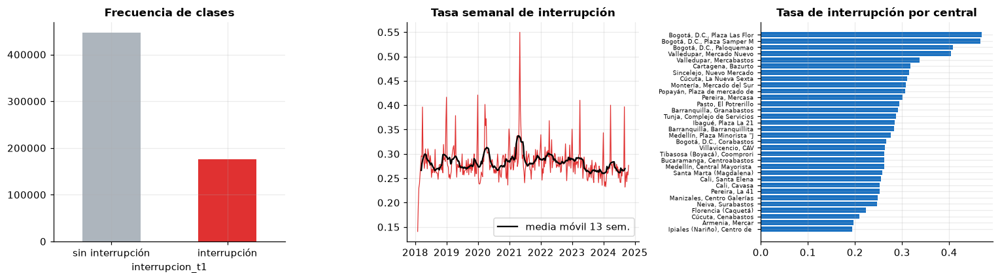
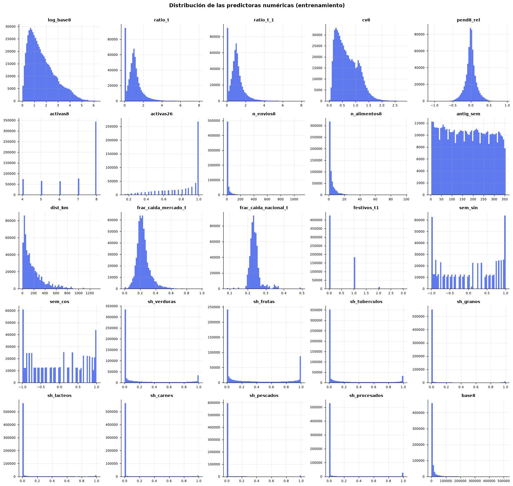
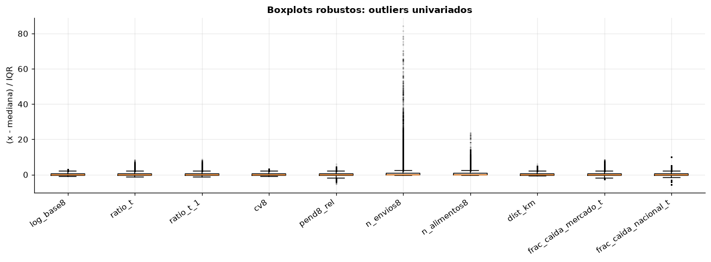
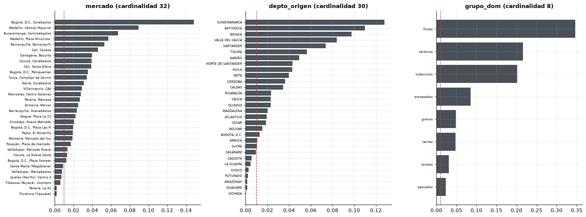
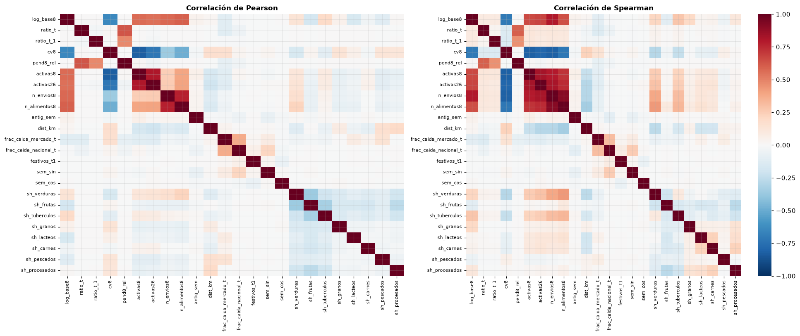
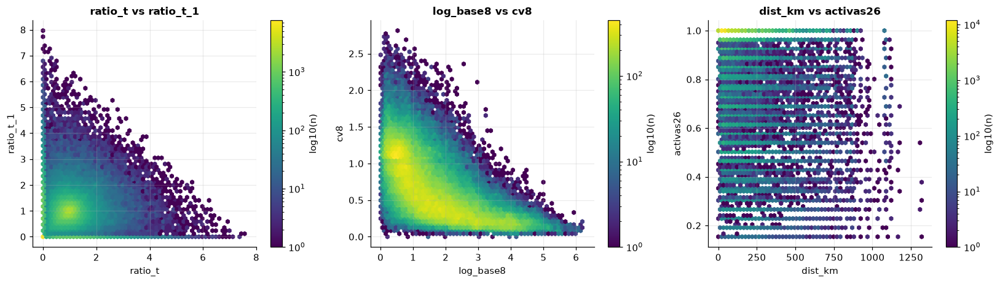
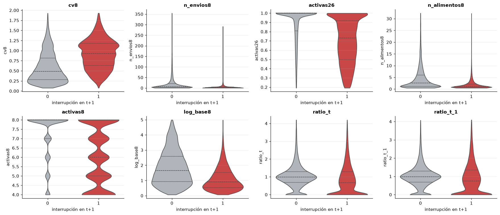
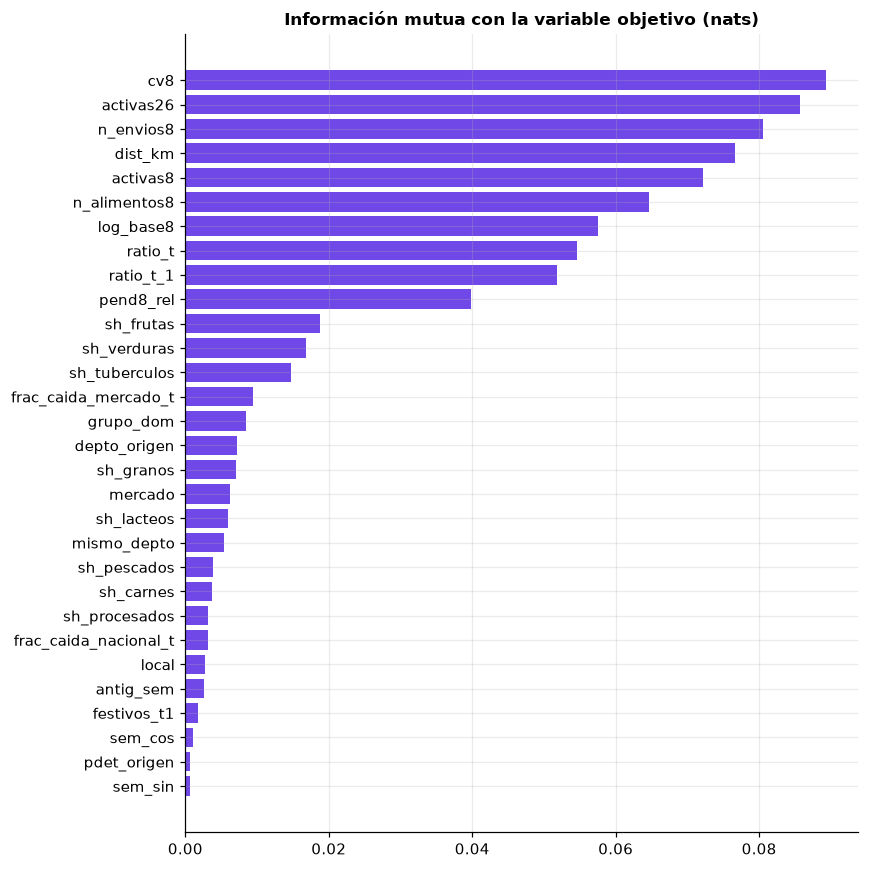
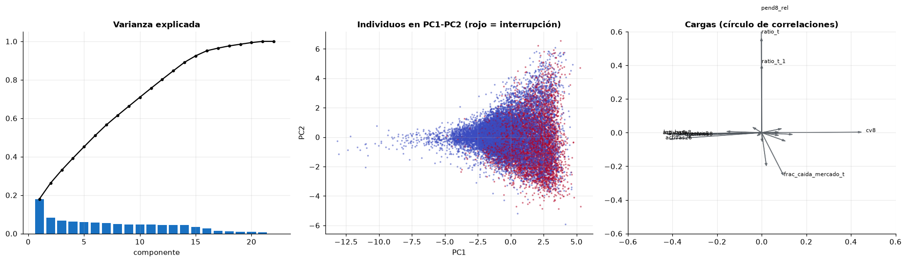
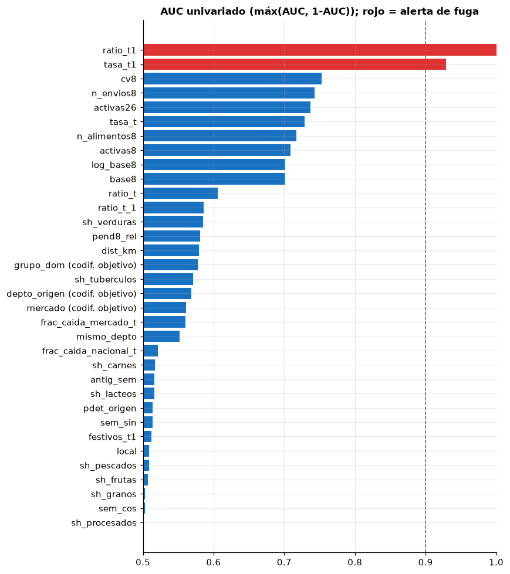

2. Análisis exploratorio (I): partición, objetivo, análisis uni, bi y multivariado, y fuga#
Orden de trabajo. Lo primero es reservar el conjunto de prueba. Todas las decisiones que se usarán en el modelado (imputación, transformaciones, selección de variables, umbrales) se toman solo con el conjunto de entrenamiento.
import sys
import warnings
sys.path.insert(0, "../src")
warnings.filterwarnings("ignore")
import matplotlib.pyplot as plt
import numpy as np
import pandas as pd
import seaborn as sns
from scipy import stats
from statsmodels.stats.multitest import multipletests
import utils as u
u.estilo()
pd.set_option("display.max_columns", 50)
pd.set_option("display.width", 160)
rng = np.random.default_rng(u.SEMILLA)
2.0 Reserva del conjunto de prueba#
Como los datos tienen tiempo, la partición es cronológica: la prueba contiene las semanas objetivo de 2025 y el entrenamiento las semanas objetivo hasta el 27 de octubre de 2024. Entre ambos se deja un hueco de 10 semanas, mayor que la ventana de 8 semanas usada para construir las predictoras, para que ninguna fila de prueba use semanas que sirvieron como objetivo en entrenamiento. Todos los corredores pueden aparecer en ambos conjuntos, porque el objetivo es predecir el futuro de corredores conocidos; la generalización a territorios nuevos se evalúa aparte con bloques espaciales (secciones 2.7 y 3).
panel = u.cargar_panel()
train, test = u.particion(panel)
excluidas = panel[(panel["semana_t1"] > u.FIN_TRAIN) & (panel["semana_t1"] < u.INICIO_TEST)]
tab = pd.DataFrame({
"filas": [len(train), len(excluidas), len(test)],
"desde (t+1)": [train["semana_t1"].min(), excluidas["semana_t1"].min(), test["semana_t1"].min()],
"hasta (t+1)": [train["semana_t1"].max(), excluidas["semana_t1"].max(), test["semana_t1"].max()],
"tasa de interrupción": [train[u.VAR_OBJETIVO].mean(), excluidas[u.VAR_OBJETIVO].mean(),
test[u.VAR_OBJETIVO].mean()],
"corredores": [train.groupby(["mercado", "cod_mpio"]).ngroups,
excluidas.groupby(["mercado", "cod_mpio"]).ngroups,
test.groupby(["mercado", "cod_mpio"]).ngroups],
}, index=["entrenamiento", "hueco (descartado)", "prueba"])
tab
| filas | desde (t+1) | hasta (t+1) | tasa de interrupción | corredores | |
|---|---|---|---|---|---|
| entrenamiento | 622244 | 2018-01-29 | 2024-10-21 | 0.282232 | 4305 |
| hueco (descartado) | 19211 | 2024-10-28 | 2024-12-30 | 0.289001 | 2258 |
| prueba | 103466 | 2025-01-06 | 2025-12-29 | 0.260433 | 3009 |
A partir de aquí todo el EDA usa solo train.
2.1 Variable objetivo#
y = train[u.VAR_OBJETIVO]
conteo = y.value_counts().rename({0: "sin interrupción", 1: "interrupción"})
print(conteo.to_string())
print(f"\nProporción de la clase minoritaria: {y.mean():.3f}; razón de desbalance {(1 - y.mean()) / y.mean():.2f}:1")
print(f"Casos de la clase minoritaria: {int(y.sum()):,}")
fig, axes = plt.subplots(1, 3, figsize=(14, 4))
conteo.plot.bar(ax=axes[0], color=["#adb5bd", "#e03131"], rot=0)
axes[0].set_title("Frecuencia de clases")
serie = train.groupby("semana_t1")[u.VAR_OBJETIVO].mean()
axes[1].plot(serie.index, serie.values, lw=0.8, color="#e03131")
axes[1].plot(serie.rolling(13, center=True).mean(), color="black", lw=1.5, label="media móvil 13 sem.")
axes[1].set_title("Tasa semanal de interrupción")
axes[1].legend()
por_mercado = train.groupby("mercado")[u.VAR_OBJETIVO].mean().sort_values()
axes[2].barh(range(len(por_mercado)), por_mercado.values, color="#1971c2")
axes[2].set_yticks(range(len(por_mercado)))
axes[2].set_yticklabels([m[:28] for m in por_mercado.index], fontsize=6)
axes[2].set_title("Tasa de interrupción por central")
plt.tight_layout()
plt.show()
interrupcion_t1
sin interrupción 446627
interrupción 175617
Proporción de la clase minoritaria: 0.282; razón de desbalance 2.54:1
Casos de la clase minoritaria: 175,617

print("Tasa de interrupción por origen PDET:")
print(train.groupby("pdet_origen")[u.VAR_OBJETIVO].agg(["mean", "size"]).to_string())
print("\nTasa por año de la semana objetivo:")
print(train.groupby(train["semana_t1"].dt.year)[u.VAR_OBJETIVO].agg(["mean", "size"]).round(3).to_string())
Tasa de interrupción por origen PDET:
mean size
pdet_origen
0 0.276143 557100
1 0.334306 65144
Tasa por año de la semana objetivo:
mean size
semana_t1
2018 0.282 83578
2019 0.281 90450
2020 0.281 89438
2021 0.297 90295
2022 0.288 92011
2023 0.274 94334
2024 0.270 82138
Interpretación.
La clase positiva (interrupción) representa 28,2 % de las filas de entrenamiento: 175.617 casos, desbalance moderado de 2,5:1. Hay casos de sobra para estimar la clase minoritaria, pero un clasificador trivial que siempre prediga «sin interrupción» ya obtiene 71,8 % de exactitud. Implicación para la métrica: la exactitud es engañosa; se priorizan el AUC-ROC, el AUC-PR (cuya línea base es 0,28), el F1 y el recall de la clase positiva, y se reporta la calibración.
La tasa semanal es estable entre años (27 % a 30 %) pero tiene picos: el más visible coincide con el paro nacional de 2021 (semana del 3 de mayo: 55 % de corredores interrumpidos; 2021 es el año con la tasa más alta, 29,7 %), y hay picos recurrentes en las semanas de fin de año (semana ISO 1: 37 %) y de Semana Santa (semanas 13-14: 31-35 %). Esto anticipa dependencia temporal y choques comunes a muchos corredores a la vez (sección 2.6).
La tasa varía entre centrales, de 19 % (Ipiales, Armenia) a 47 % (plazas Las Flores y Samper Mendoza en Bogotá, que son mercados minoristas con corredores pequeños), y es mayor en corredores que nacen en municipios PDET (33,4 % frente a 27,6 %).
Implicación para la validación: como la tasa cambia en el tiempo y hay choques sincronizados, la validación debe ser cronológica y los intervalos de confianza deben remuestrear semanas completas. La estratificación no es necesaria porque ambas clases son abundantes en cualquier ventana temporal.
2.2 Análisis unidimensional#
Variables numéricas#
num = u.NUMERICAS + ["base8"]
desc = train[num].describe(percentiles=[0.01, 0.25, 0.5, 0.75, 0.99]).T
desc["asimetria"] = train[num].skew()
desc["curtosis"] = train[num].kurt()
q1, q3 = train[num].quantile(0.25), train[num].quantile(0.75)
iqr = q3 - q1
desc["%_outliers_IQR"] = ((train[num] < q1 - 1.5 * iqr) | (train[num] > q3 + 1.5 * iqr)).mean() * 100
desc.round(3)
| count | mean | std | min | 1% | 25% | 50% | 75% | 99% | max | asimetria | curtosis | %_outliers_IQR | |
|---|---|---|---|---|---|---|---|---|---|---|---|---|---|
| log_base8 | 622244.0 | 1.647 | 1.119 | 0.002 | 0.108 | 0.760 | 1.394 | 2.316 | 4.720 | 6.242 | 0.880 | 0.219 | 1.165 |
| ratio_t | 622244.0 | 1.000 | 0.768 | 0.000 | 0.000 | 0.531 | 0.943 | 1.312 | 3.651 | 7.965 | 1.445 | 4.510 | 4.456 |
| ratio_t_1 | 622052.0 | 0.999 | 0.745 | 0.000 | 0.000 | 0.554 | 0.950 | 1.303 | 3.556 | 7.965 | 1.410 | 4.569 | 4.445 |
| cv8 | 622244.0 | 0.681 | 0.411 | 0.000 | 0.092 | 0.336 | 0.605 | 0.977 | 1.760 | 2.814 | 0.678 | -0.045 | 0.460 |
| pend8_rel | 622244.0 | -0.000 | 0.143 | -1.083 | -0.386 | -0.072 | 0.000 | 0.071 | 0.386 | 0.953 | -0.003 | 1.343 | 6.651 |
| activas8 | 622244.0 | 6.886 | 1.457 | 4.000 | 4.000 | 6.000 | 8.000 | 8.000 | 8.000 | 8.000 | -0.920 | -0.688 | 0.000 |
| activas26 | 622244.0 | 0.823 | 0.225 | 0.154 | 0.192 | 0.692 | 0.960 | 1.000 | 1.000 | 1.000 | -1.135 | 0.130 | 1.050 |
| n_envios8 | 622244.0 | 19.810 | 53.993 | 0.500 | 0.500 | 1.625 | 4.500 | 14.625 | 238.500 | 1103.000 | 7.961 | 90.425 | 12.900 |
| n_alimentos8 | 622244.0 | 4.069 | 5.511 | 0.500 | 0.500 | 1.000 | 2.000 | 4.875 | 27.125 | 96.125 | 4.030 | 28.551 | 8.532 |
| antig_sem | 622244.0 | 173.801 | 101.562 | 3.000 | 6.000 | 85.000 | 173.000 | 261.000 | 350.000 | 354.000 | 0.037 | -1.206 | 0.000 |
| dist_km | 622244.0 | 182.119 | 182.752 | 0.000 | 0.000 | 47.717 | 122.604 | 250.408 | 833.304 | 1319.533 | 1.719 | 3.171 | 5.609 |
| frac_caida_mercado_t | 622244.0 | 0.238 | 0.087 | 0.000 | 0.073 | 0.186 | 0.225 | 0.273 | 0.536 | 0.958 | 1.471 | 5.135 | 5.185 |
| frac_caida_nacional_t | 622244.0 | 0.238 | 0.033 | 0.085 | 0.194 | 0.222 | 0.234 | 0.248 | 0.362 | 0.495 | 2.388 | 13.754 | 6.735 |
| festivos_t1 | 622244.0 | 0.340 | 0.528 | 0.000 | 0.000 | 0.000 | 0.000 | 1.000 | 2.000 | 3.000 | 1.350 | 1.626 | 0.323 |
| sem_sin | 622244.0 | 0.006 | 0.718 | -1.000 | -1.000 | -0.739 | 0.011 | 0.747 | 1.000 | 1.000 | -0.014 | -1.527 | 0.000 |
| sem_cos | 622244.0 | -0.035 | 0.695 | -1.000 | -1.000 | -0.743 | -0.016 | 0.649 | 1.000 | 1.000 | 0.068 | -1.461 | 0.000 |
| sh_verduras | 622244.0 | 0.217 | 0.337 | 0.000 | 0.000 | 0.000 | 0.005 | 0.328 | 1.000 | 1.000 | 1.358 | 0.273 | 12.325 |
| sh_frutas | 622244.0 | 0.344 | 0.399 | 0.000 | 0.000 | 0.000 | 0.111 | 0.771 | 1.000 | 1.000 | 0.665 | -1.271 | 0.000 |
| sh_tuberculos | 622244.0 | 0.202 | 0.329 | 0.000 | 0.000 | 0.000 | 0.000 | 0.273 | 1.000 | 1.000 | 1.463 | 0.593 | 14.556 |
| sh_granos | 622244.0 | 0.050 | 0.187 | 0.000 | 0.000 | 0.000 | 0.000 | 0.000 | 1.000 | 1.000 | 4.117 | 16.103 | 14.489 |
| sh_lacteos | 622244.0 | 0.035 | 0.157 | 0.000 | 0.000 | 0.000 | 0.000 | 0.000 | 1.000 | 1.000 | 5.263 | 27.428 | 14.510 |
| sh_carnes | 622244.0 | 0.045 | 0.180 | 0.000 | 0.000 | 0.000 | 0.000 | 0.000 | 1.000 | 1.000 | 4.330 | 18.006 | 10.966 |
| sh_pescados | 622244.0 | 0.024 | 0.140 | 0.000 | 0.000 | 0.000 | 0.000 | 0.000 | 1.000 | 1.000 | 6.329 | 39.448 | 5.898 |
| sh_procesados | 622244.0 | 0.084 | 0.252 | 0.000 | 0.000 | 0.000 | 0.000 | 0.000 | 1.000 | 1.000 | 2.996 | 7.415 | 18.371 |
| base8 | 622244.0 | 10571.613 | 23705.857 | 2.450 | 113.750 | 1138.990 | 3031.312 | 9137.229 | 111182.492 | 513085.875 | 6.594 | 69.340 | 12.170 |
fig, axes = plt.subplots(5, 5, figsize=(16, 15))
for ax, c in zip(axes.ravel(), num):
x = train[c].dropna()
ax.hist(x, bins=60, color="#4263eb", alpha=0.85)
ax.set_title(c, fontsize=9)
ax.tick_params(labelsize=7)
for ax in axes.ravel()[len(num):]:
ax.axis("off")
plt.suptitle("Distribución de las predictoras numéricas (entrenamiento)", y=1.0, fontweight="bold")
plt.tight_layout()
plt.show()

cols_box = ["log_base8", "ratio_t", "ratio_t_1", "cv8", "pend8_rel", "n_envios8", "n_alimentos8",
"dist_km", "frac_caida_mercado_t", "frac_caida_nacional_t"]
z = (train[cols_box] - train[cols_box].median()) / (train[cols_box].quantile(0.75) - train[cols_box].quantile(0.25))
fig, ax = plt.subplots(figsize=(12, 4.5))
ax.boxplot([z[c].dropna().sample(50000, random_state=u.SEMILLA) for c in cols_box], tick_labels=cols_box,
showfliers=True, flierprops={"markersize": 1, "alpha": 0.2})
ax.set_ylabel("(x - mediana) / IQR")
ax.set_title("Boxplots robustos: outliers univariados")
plt.xticks(rotation=35, ha="right")
plt.tight_layout()
plt.show()

Normalidad. Con cientos de miles de filas cualquier prueba rechaza la normalidad por desviaciones mínimas; se aplica la prueba de D’Agostino-Pearson a una submuestra de 5.000 filas solo como referencia, junto con la asimetría y la curtosis, que son más informativas.
sub = train.sample(5000, random_state=u.SEMILLA)
norm = pd.DataFrame({c: stats.normaltest(sub[c].dropna()) for c in
["log_base8", "ratio_t", "cv8", "pend8_rel", "dist_km", "n_envios8"]},
index=["estadístico K2", "p"]).T
norm["log1p(x) asimetría"] = [np.log1p(train[c].clip(lower=0)).skew() for c in norm.index]
norm.round(4)
| estadístico K2 | p | log1p(x) asimetría | |
|---|---|---|---|
| log_base8 | 477.0264 | 0.0 | 0.1237 |
| ratio_t | 1541.0765 | 0.0 | -0.0076 |
| cv8 | 326.3381 | 0.0 | 0.2434 |
| pend8_rel | 137.7931 | 0.0 | 2.0083 |
| dist_km | 1624.1319 | 0.0 | -0.9614 |
| n_envios8 | 6750.5468 | 0.0 | 0.9343 |
Interpretación.
Escala del corredor.
base8(kg/día) va de 2 kg a 513 t, con asimetría 6,6 y curtosis 69; su logaritmo (log_base8) reduce la asimetría a 0,9. Lo mismo ocurre conn_envios8(asimetría 8,0) yn_alimentos8(4,0). Decisión: usar la versión logarítmica de estas variables en el modelo.Razones de cambio (
ratio_t,ratio_t_1): centradas en 1 por construcción, con cola derecha larga (hasta 8 veces el promedio) y una masa en 0 (semanas sin carga). Tienen 4-5 % de outliers por IQR que corresponden a picos reales de abastecimiento. Decisión: recortar (winsorizar) en los percentiles 1 y 99 aprendidos en entrenamiento, en lugar de eliminar filas.activas8yactivas26están acumuladas en su máximo: la mayoría de los corredores elegibles son muy regulares; los irregulares forman la cola izquierda.dist_kmva de 0 (corredores locales) a 1.320 km, con asimetría 1,7; su logaritmo la sobrecorrige (−0,96), por lo que se usarálog1py estandarización.Las participaciones por grupo de alimentos (
sh_*) tienen distribución en U o masa en cero: la mayoría de corredores se especializa en uno o dos grupos.La prueba de normalidad rechaza en todos los casos (p ≈ 0), como se esperaba; lo relevante es que la regresión logística no requiere normalidad de las predictoras, pero sí se beneficia de escalas comparables y de limitar la influencia de valores extremos.
Variables categóricas y binarias#
fig, axes = plt.subplots(1, 3, figsize=(16, 6))
for ax, c in zip(axes, u.CATEGORICAS):
f = train[c].value_counts(normalize=True)
ax.barh(range(len(f)), f.values[::-1], color="#495057")
ax.set_yticks(range(len(f)))
ax.set_yticklabels([str(s)[:26] for s in f.index[::-1]], fontsize=6)
ax.axvline(0.01, color="#e03131", ls="--", lw=1)
ax.set_title(f"{c} (cardinalidad {train[c].nunique()})")
plt.tight_layout()
plt.show()
for c in u.CATEGORICAS:
f = train[c].value_counts(normalize=True)
print(f"{c}: {train[c].nunique()} categorías; {(f < 0.01).sum()} raras (< 1 %) que suman {f[f < 0.01].sum():.2%}")
print()
print(train[u.BINARIAS].mean().rename("proporción de 1").to_string())

mercado: 32 categorías; 6 raras (< 1 %) que suman 3.34%
depto_origen: 30 categorías; 8 raras (< 1 %) que suman 2.72%
grupo_dom: 8 categorías; 0 raras (< 1 %) que suman 0.00%
mismo_depto 0.294613
local 0.016093
pdet_origen 0.104692
Interpretación. La central de destino tiene 32 niveles y el departamento de origen 30;
en ambos casos entre 6 y 8 categorías son raras (< 1 % de las filas, 3 % en total), como
Florencia, Tibasosa o departamentos amazónicos. Decisión: en el OneHotEncoder agrupar las
categorías con frecuencia menor a 1 % en una categoría «infrecuente» para evitar coeficientes
inestables. Solo 10,5 % de las filas corresponde a corredores PDET y 1,6 % a corredores locales
(origen = municipio de la central).
2.3 Análisis bidimensional#
Numéricas vs numéricas#
corr_s = train[u.NUMERICAS].corr(method="spearman")
corr_p = train[u.NUMERICAS].corr(method="pearson")
fig, axes = plt.subplots(1, 2, figsize=(18, 7.5))
for ax, cm, t in zip(axes, [corr_p, corr_s], ["Pearson", "Spearman"]):
sns.heatmap(cm, cmap="RdBu_r", vmin=-1, vmax=1, ax=ax, cbar=ax is axes[1],
xticklabels=True, yticklabels=True)
ax.set_title(f"Correlación de {t}")
ax.tick_params(labelsize=7)
plt.tight_layout()
plt.show()
pares = corr_s.where(np.triu(np.ones(corr_s.shape, bool), 1)).stack().sort_values(key=np.abs, ascending=False)
print("Pares con |rho de Spearman| > 0,6:")
print(pares[pares.abs() > 0.6].round(3).to_string())

Pares con |rho de Spearman| > 0,6:
n_envios8 n_alimentos8 0.909
activas8 activas26 0.833
activas26 n_envios8 0.825
cv8 activas8 -0.820
n_envios8 -0.813
log_base8 n_envios8 0.802
cv8 activas26 -0.793
activas8 n_envios8 0.792
activas26 n_alimentos8 0.747
activas8 n_alimentos8 0.725
cv8 n_alimentos8 -0.720
log_base8 cv8 -0.704
activas26 0.680
activas8 0.657
n_alimentos8 0.645
fig, axes = plt.subplots(1, 3, figsize=(15, 4.3))
s = train.sample(150000, random_state=u.SEMILLA)
for ax, (a, b) in zip(axes, [("ratio_t", "ratio_t_1"), ("log_base8", "cv8"), ("dist_km", "activas26")]):
hb = ax.hexbin(s[a], s[b], gridsize=60, bins="log", cmap="viridis", mincnt=1)
ax.set_xlabel(a)
ax.set_ylabel(b)
ax.set_title(f"{a} vs {b}")
plt.colorbar(hb, ax=ax, label="log10(n)")
plt.tight_layout()
plt.show()

Predictoras numéricas vs variable objetivo#
Para cada predictora se compara su distribución entre clases con Mann-Whitney (no se asume normalidad), se reporta el tamaño del efecto (correlación biserial de rangos, equivalente a 2·AUC − 1) y se corrigen los p-valores por comparaciones múltiples con Holm.
filas = []
for c in u.NUMERICAS + u.BINARIAS:
a = train.loc[y == 1, c].dropna()
b = train.loc[y == 0, c].dropna()
mw = stats.mannwhitneyu(a, b)
auc = mw.statistic / (len(a) * len(b))
filas.append({"variable": c, "mediana_interr": a.median(), "mediana_no": b.median(),
"p": mw.pvalue, "rbc": 2 * auc - 1})
biv = pd.DataFrame(filas)
biv["p_holm"] = multipletests(biv["p"], method="holm")[1]
biv["|rbc|"] = biv["rbc"].abs()
biv.sort_values("|rbc|", ascending=False).round(4).reset_index(drop=True)
| variable | mediana_interr | mediana_no | p | rbc | p_holm | |rbc| | |
|---|---|---|---|---|---|---|---|
| 0 | cv8 | 0.9332 | 0.4843 | 0.0000 | 0.5061 | 0.0000 | 0.5061 |
| 1 | n_envios8 | 1.8750 | 6.8750 | 0.0000 | -0.4852 | 0.0000 | 0.4852 |
| 2 | activas26 | 0.7200 | 1.0000 | 0.0000 | -0.4742 | 0.0000 | 0.4742 |
| 3 | n_alimentos8 | 1.1250 | 2.6250 | 0.0000 | -0.4338 | 0.0000 | 0.4338 |
| 4 | activas8 | 6.0000 | 8.0000 | 0.0000 | -0.4184 | 0.0000 | 0.4184 |
| 5 | log_base8 | 0.9088 | 1.6534 | 0.0000 | -0.4035 | 0.0000 | 0.4035 |
| 6 | ratio_t | 0.6867 | 0.9871 | 0.0000 | -0.2123 | 0.0000 | 0.2123 |
| 7 | ratio_t_1 | 0.7497 | 0.9839 | 0.0000 | -0.1718 | 0.0000 | 0.1718 |
| 8 | sh_verduras | 0.0000 | 0.0180 | 0.0000 | -0.1700 | 0.0000 | 0.1700 |
| 9 | pend8_rel | -0.0301 | 0.0059 | 0.0000 | -0.1622 | 0.0000 | 0.1622 |
| 10 | dist_km | 155.4249 | 111.5342 | 0.0000 | 0.1580 | 0.0000 | 0.1580 |
| 11 | sh_tuberculos | 0.0000 | 0.0068 | 0.0000 | -0.1415 | 0.0000 | 0.1415 |
| 12 | frac_caida_mercado_t | 0.2344 | 0.2222 | 0.0000 | 0.1207 | 0.0000 | 0.1207 |
| 13 | mismo_depto | 0.0000 | 0.0000 | 0.0000 | -0.1029 | 0.0000 | 0.1029 |
| 14 | frac_caida_nacional_t | 0.2343 | 0.2333 | 0.0000 | 0.0420 | 0.0000 | 0.0420 |
| 15 | sh_carnes | 0.0000 | 0.0000 | 0.0000 | -0.0341 | 0.0000 | 0.0341 |
| 16 | antig_sem | 168.0000 | 175.0000 | 0.0000 | -0.0328 | 0.0000 | 0.0328 |
| 17 | sh_lacteos | 0.0000 | 0.0000 | 0.0000 | -0.0325 | 0.0000 | 0.0325 |
| 18 | pdet_origen | 0.0000 | 0.0000 | 0.0000 | 0.0269 | 0.0000 | 0.0269 |
| 19 | sem_sin | 0.0986 | 0.0108 | 0.0000 | 0.0266 | 0.0000 | 0.0266 |
| 20 | festivos_t1 | 0.0000 | 0.0000 | 0.0000 | 0.0241 | 0.0000 | 0.0241 |
| 21 | local | 0.0000 | 0.0000 | 0.0000 | -0.0174 | 0.0000 | 0.0174 |
| 22 | sh_pescados | 0.0000 | 0.0000 | 0.0000 | 0.0171 | 0.0000 | 0.0171 |
| 23 | sh_frutas | 0.1052 | 0.1125 | 0.0000 | -0.0145 | 0.0000 | 0.0145 |
| 24 | sh_granos | 0.0000 | 0.0000 | 0.0000 | -0.0055 | 0.0000 | 0.0055 |
| 25 | sem_cos | -0.0163 | -0.0163 | 0.0026 | 0.0049 | 0.0051 | 0.0049 |
| 26 | sh_procesados | 0.0000 | 0.0000 | 0.0236 | 0.0025 | 0.0236 | 0.0025 |
top = biv.sort_values("|rbc|", ascending=False)["variable"].head(8).tolist()
fig, axes = plt.subplots(2, 4, figsize=(16, 7))
ss = train.sample(80000, random_state=u.SEMILLA)
for ax, c in zip(axes.ravel(), top):
lim = ss[c].quantile([0.005, 0.995])
sns.violinplot(data=ss[ss[c].between(*lim)], x=u.VAR_OBJETIVO, y=c, ax=ax, cut=0,
palette=["#adb5bd", "#e03131"], inner="quartile")
ax.set_title(c)
ax.set_xlabel("interrupción en t+1")
plt.tight_layout()
plt.show()

Interpretación.
Con más de 600 mil filas todas las diferencias son «significativas» incluso tras la corrección de Holm, así que lo que importa es el tamaño del efecto. Las variables con mayor efecto (|rbc| > 0,4) describen regularidad y tamaño del corredor: coeficiente de variación (
cv8), número de cargas y productos, semanas activas y escala (log_base8). Los corredores pequeños e irregulares se interrumpen mucho más que los grandes y estables.La dinámica reciente (
ratio_t,ratio_t_1,pend8_rel) tiene un efecto intermedio (|rbc| ≈ 0,16-0,21): una caída en t o una tendencia negativa anticipan una caída en t+1.La distancia tiene un efecto pequeño pero coherente (mediana 155 km en interrupciones frente a 112 km), y los corredores dentro del mismo departamento son más estables.
Calendario (
festivos_t1,sem_sin,sem_cos), PDET y la mayoría de las participaciones por grupo tienen efectos casi nulos de forma aislada (|rbc| < 0,03), aunque pueden aportar en combinación con otras variables.La relación de
ratio_tcon la probabilidad de interrupción no es monótona (ver hexbin y violines): la tasa de interrupción es 57 % cuandoratio_t= 0, baja a 16 % cuando está entre 0,75 y 1,5 y vuelve a subir a 40 % cuando supera 3, porque un pico suele ser seguido de regreso a la media. Es una relación en forma de U. Esto motiva recortar las razones y, en capítulos posteriores, probar modelos no lineales.
Categóricas vs objetivo y categóricas entre sí#
filas = []
for c in u.CATEGORICAS + u.BINARIAS:
t_ = pd.crosstab(train[c], y)
chi2, p, dof, _ = stats.chi2_contingency(t_, correction=False)
filas.append({"variable": c, "categorías": t_.shape[0], "chi2": chi2, "gl": dof, "p": p,
"V_Cramer": u.cramers_v(t_)})
cat = pd.DataFrame(filas)
cat["p_holm"] = multipletests(cat["p"], method="holm")[1]
cat.round(4)
| variable | categorías | chi2 | gl | p | V_Cramer | p_holm | |
|---|---|---|---|---|---|---|---|
| 0 | mercado | 32 | 8364.0117 | 31 | 0.0 | 0.1159 | 0.0 |
| 1 | depto_origen | 30 | 8732.9012 | 29 | 0.0 | 0.1185 | 0.0 |
| 2 | grupo_dom | 8 | 10777.3663 | 7 | 0.0 | 0.1316 | 0.0 |
| 3 | mismo_depto | 2 | 6428.6364 | 1 | 0.0 | 0.1016 | 0.0 |
| 4 | local | 2 | 2418.8821 | 1 | 0.0 | 0.0623 | 0.0 |
| 5 | pdet_origen | 2 | 973.9812 | 1 | 0.0 | 0.0396 | 0.0 |
print("Tabla de contingencia grupo dominante x interrupción (proporción por fila):")
print(pd.crosstab(train["grupo_dom"], y, normalize="index").round(3).to_string())
print("\nAsociación entre categóricas (V de Cramér):")
vv = pd.DataFrame(index=u.CATEGORICAS + ["pdet_origen"], columns=u.CATEGORICAS + ["pdet_origen"], dtype=float)
for a in vv.index:
for b in vv.columns:
vv.loc[a, b] = 1.0 if a == b else u.cramers_v(pd.crosstab(train[a], train[b]))
print(vv.round(3).to_string())
Tabla de contingencia grupo dominante x interrupción (proporción por fila):
interrupcion_t1 0 1
grupo_dom
carnes 0.766 0.234
frutas 0.703 0.297
granos 0.588 0.412
lacteos 0.662 0.338
pescados 0.548 0.452
procesados 0.638 0.362
tuberculos 0.759 0.241
verduras 0.781 0.219
Asociación entre categóricas (V de Cramér):
mercado depto_origen grupo_dom pdet_origen
mercado 1.000 0.314 0.249 0.206
depto_origen 0.314 1.000 0.322 0.538
grupo_dom 0.249 0.322 1.000 0.138
pdet_origen 0.206 0.538 0.138 1.000
Información mutua (relaciones no lineales)#
from sklearn.feature_selection import mutual_info_classif
mi_s = train.sample(120000, random_state=u.SEMILLA)
Xmi = mi_s[u.NUMERICAS + u.BINARIAS].fillna(mi_s[u.NUMERICAS + u.BINARIAS].median())
mi = pd.Series(mutual_info_classif(Xmi, mi_s[u.VAR_OBJETIVO], random_state=u.SEMILLA,
discrete_features=[c in u.BINARIAS for c in Xmi.columns]),
index=Xmi.columns)
for c in u.CATEGORICAS:
codes = mi_s[c].astype("category").cat.codes.to_frame()
mi[c] = mutual_info_classif(codes, mi_s[u.VAR_OBJETIVO], discrete_features=True,
random_state=u.SEMILLA)[0]
mi = mi.sort_values()
fig, ax = plt.subplots(figsize=(8, 8))
ax.barh(mi.index, mi.values, color="#7048e8")
ax.set_title("Información mutua con la variable objetivo (nats)")
plt.tight_layout()
plt.show()

Multicolinealidad (VIF)#
from statsmodels.stats.outliers_influence import variance_inflation_factor
vif_s = train.sample(60000, random_state=u.SEMILLA)[u.NUMERICAS + u.BINARIAS].dropna()
Xv = (vif_s - vif_s.mean()) / vif_s.std()
Xv = Xv.drop(columns=["sh_procesados"]) # las participaciones suman 1: se omite una categoría
Xv.insert(0, "const", 1.0)
vif = pd.Series([variance_inflation_factor(Xv.values, i) for i in range(1, Xv.shape[1])],
index=Xv.columns[1:]).sort_values(ascending=False)
vif.round(2).to_frame("VIF").T
| activas8 | cv8 | n_alimentos8 | sh_frutas | activas26 | log_base8 | n_envios8 | pend8_rel | sh_verduras | sh_tuberculos | ratio_t | ratio_t_1 | sh_carnes | sh_granos | sh_lacteos | dist_km | mismo_depto | sh_pescados | frac_caida_mercado_t | local | frac_caida_nacional_t | sem_sin | pdet_origen | antig_sem | festivos_t1 | sem_cos | |
|---|---|---|---|---|---|---|---|---|---|---|---|---|---|---|---|---|---|---|---|---|---|---|---|---|---|---|
| VIF | 4.48 | 3.99 | 3.24 | 3.24 | 3.15 | 3.03 | 3.0 | 2.83 | 2.71 | 2.53 | 2.18 | 1.71 | 1.58 | 1.55 | 1.46 | 1.44 | 1.4 | 1.32 | 1.25 | 1.24 | 1.23 | 1.06 | 1.05 | 1.02 | 1.01 | 1.01 |
Interpretación.
Las categóricas tienen asociación débil a moderada con el objetivo (V de Cramér entre 0,04 y 0,13). El grupo dominante es la más informativa: los corredores de pescados (45 %), granos (41 %) y procesados (36 %) se interrumpen más que los de verduras (22 %) y tubérculos (24 %), que son productos de abastecimiento continuo y de corta vida útil.
PDET está fuertemente asociado con el departamento de origen (V = 0,54), lo esperable porque los PDET se concentran en ciertas subregiones. En el modelo lineal parte del efecto PDET será absorbido por el departamento, lo que debe tenerse en cuenta al interpretar el coeficiente.
Información mutua. Confirma el ranking de Mann-Whitney y añade la central de destino y el departamento como fuentes de información no lineal. Las variables de calendario aportan casi nada por sí solas.
Multicolinealidad. Hay correlaciones de Spearman altas entre las medidas de tamaño y regularidad (
n_envios8-n_alimentos80,91;activas8-activas260,83;cv8-activas8−0,82), pero todos los VIF quedan por debajo de 5 (máximo 4,5 enactivas8) tras omitir una de las participaciones, que suman 1 por construcción. Decisión: conservar todas las variables y usar regularización L2 en la regresión logística, que estabiliza los coeficientes de variables correlacionadas; al interpretar coeficientes se leerán en bloque (tamaño, regularidad, dinámica), no individualmente.
2.4 Análisis multivariado#
PCA exploratorio#
from sklearn.decomposition import PCA
from sklearn.preprocessing import StandardScaler
pca_s = train.sample(100000, random_state=u.SEMILLA)
cols_pca = [c for c in u.NUMERICAS if c not in ("sem_sin", "sem_cos")]
Xp = StandardScaler().fit_transform(pca_s[cols_pca].fillna(pca_s[cols_pca].median()))
pca = PCA(random_state=u.SEMILLA).fit(Xp)
ev = pca.explained_variance_ratio_
print("Varianza explicada acumulada:", np.round(np.cumsum(ev)[:10], 3))
print(f"Componentes para 80 % de la varianza: {np.argmax(np.cumsum(ev) >= 0.8) + 1} de {len(cols_pca)}")
print(f"Componentes con autovalor > 1 (Kaiser): {(pca.explained_variance_ > 1).sum()}")
Z = pca.transform(Xp)[:, :2]
fig, axes = plt.subplots(1, 3, figsize=(17, 5))
axes[0].bar(range(1, len(ev) + 1), ev, color="#1971c2")
axes[0].plot(range(1, len(ev) + 1), np.cumsum(ev), "o-", color="black", ms=3)
axes[0].set_title("Varianza explicada")
axes[0].set_xlabel("componente")
idx = rng.choice(len(Z), 20000, replace=False)
sc = axes[1].scatter(Z[idx, 0], Z[idx, 1], c=pca_s[u.VAR_OBJETIVO].values[idx], cmap="coolwarm",
s=2, alpha=0.4)
axes[1].set_title("Individuos en PC1-PC2 (rojo = interrupción)")
axes[1].set_xlabel("PC1")
axes[1].set_ylabel("PC2")
cargas = pd.DataFrame(pca.components_[:2].T, index=cols_pca, columns=["PC1", "PC2"])
for v, (a, b) in cargas.iterrows():
axes[2].arrow(0, 0, a, b, color="#495057", head_width=0.01, alpha=0.7)
if np.hypot(a, b) > 0.2:
axes[2].text(a * 1.08, b * 1.08, v, fontsize=7)
axes[2].set_xlim(-0.6, 0.6)
axes[2].set_ylim(-0.6, 0.6)
axes[2].set_title("Cargas (círculo de correlaciones)")
plt.tight_layout()
plt.show()
cargas.assign(norma=np.hypot(cargas.PC1, cargas.PC2)).sort_values("norma", ascending=False).head(10).round(3)
Varianza explicada acumulada: [0.18 0.263 0.33 0.392 0.452 0.51 0.566 0.615 0.662 0.709]
Componentes para 80 % de la varianza: 12 de 22
Componentes con autovalor > 1 (Kaiser): 12

| PC1 | PC2 | norma | |
|---|---|---|---|
| pend8_rel | -0.002 | 0.677 | 0.677 |
| ratio_t | -0.001 | 0.546 | 0.546 |
| cv8 | 0.433 | 0.003 | 0.433 |
| activas8 | -0.411 | -0.008 | 0.411 |
| log_base8 | -0.408 | -0.008 | 0.408 |
| activas26 | -0.400 | -0.037 | 0.401 |
| ratio_t_1 | 0.000 | 0.383 | 0.383 |
| n_alimentos8 | -0.372 | -0.014 | 0.372 |
| n_envios8 | -0.319 | -0.016 | 0.319 |
| frac_caida_mercado_t | 0.092 | -0.239 | 0.256 |
Outliers multivariados#
from sklearn.covariance import MinCovDet
from sklearn.ensemble import IsolationForest
cols_out = ["log_base8", "ratio_t", "ratio_t_1", "cv8", "pend8_rel", "activas26", "n_envios8", "dist_km"]
mo = train.sample(40000, random_state=u.SEMILLA)[cols_out + [u.VAR_OBJETIVO]].dropna()
Xo = mo[cols_out].copy()
Xo["n_envios8"] = np.log1p(Xo["n_envios8"])
Xo["dist_km"] = np.log1p(Xo["dist_km"])
mcd = MinCovDet(random_state=u.SEMILLA).fit(Xo)
d2 = mcd.mahalanobis(Xo)
corte = stats.chi2.ppf(0.999, df=len(cols_out))
iso = IsolationForest(contamination="auto", random_state=u.SEMILLA).fit(Xo)
anom = iso.predict(Xo) == -1
mo["out_mahal"], mo["out_iso"] = d2 > corte, anom
print(f"Outliers por Mahalanobis robusta (chi2 0,999): {mo['out_mahal'].mean():.2%}")
print(f"Outliers por Isolation Forest: {mo['out_iso'].mean():.2%}")
print(f"Coincidencia (ambos): {(mo['out_mahal'] & mo['out_iso']).mean():.2%}")
print("\nTasa de interrupción según condición de outlier:")
print(mo.groupby("out_mahal")[u.VAR_OBJETIVO].mean().rename("Mahalanobis").to_string())
print(mo.groupby("out_iso")[u.VAR_OBJETIVO].mean().rename("IsolationForest").to_string())
print("\nMedianas de outliers vs resto (Mahalanobis):")
print(mo.groupby("out_mahal")[cols_out].median().T.round(3).to_string())
Outliers por Mahalanobis robusta (chi2 0,999): 47.04%
Outliers por Isolation Forest: 15.35%
Coincidencia (ambos): 13.01%
Tasa de interrupción según condición de outlier:
out_mahal
False 0.131274
True 0.454202
out_iso
False 0.255044
True 0.438345
Medianas de outliers vs resto (Mahalanobis):
out_mahal False True
log_base8 2.136 0.823
ratio_t 0.972 0.809
ratio_t_1 0.979 0.850
cv8 0.357 0.997
pend8_rel -0.001 0.006
activas26 1.000 0.654
n_envios8 12.625 1.625
dist_km 86.697 170.408
Subpoblaciones de corredores (clustering exploratorio)#
Se resume cada corredor con su perfil promedio en entrenamiento y se agrupan con K-means.
from sklearn.cluster import KMeans
from sklearn.metrics import silhouette_score
perfil = train.groupby(["mercado", "cod_mpio"]).agg(
log_base8=("log_base8", "mean"), cv8=("cv8", "mean"), activas26=("activas26", "mean"),
dist_km=("dist_km", "first"), n_alimentos8=("n_alimentos8", "mean"),
sh_frutas=("sh_frutas", "mean"), sh_verduras=("sh_verduras", "mean"),
sh_tuberculos=("sh_tuberculos", "mean"), tasa_interr=(u.VAR_OBJETIVO, "mean"),
n=(u.VAR_OBJETIVO, "size"), pdet=("pdet_origen", "first"))
perfil = perfil[perfil["n"] >= 20]
cols_k = ["log_base8", "cv8", "activas26", "dist_km", "n_alimentos8", "sh_frutas", "sh_verduras", "sh_tuberculos"]
Xk = StandardScaler().fit_transform(np.column_stack([perfil[cols_k].drop(columns="dist_km"),
np.log1p(perfil["dist_km"])]))
sil = {k: silhouette_score(Xk, KMeans(k, n_init=10, random_state=u.SEMILLA).fit_predict(Xk)) for k in range(2, 9)}
print("Silueta por k:", {k: round(v, 3) for k, v in sil.items()})
k_opt = max(sil, key=sil.get)
perfil["cluster"] = KMeans(k_opt, n_init=10, random_state=u.SEMILLA).fit_predict(Xk)
res = perfil.groupby("cluster").agg(corredores=("n", "size"), **{c: (c, "median") for c in cols_k},
tasa_interr=("tasa_interr", "mean"), pdet=("pdet", "mean"))
res.round(3)
Silueta por k: {2: 0.303, 3: 0.213, 4: 0.247, 5: 0.259, 6: 0.264, 7: 0.273, 8: 0.287}
| corredores | log_base8 | cv8 | activas26 | dist_km | n_alimentos8 | sh_frutas | sh_verduras | sh_tuberculos | tasa_interr | pdet | |
|---|---|---|---|---|---|---|---|---|---|---|---|
| cluster | |||||||||||
| 0 | 2141 | 0.762 | 1.015 | 0.564 | 183.467 | 0.956 | 0.19 | 0.004 | 0.002 | 0.508 | 0.136 |
| 1 | 992 | 2.108 | 0.426 | 0.991 | 81.502 | 4.525 | 0.10 | 0.117 | 0.077 | 0.135 | 0.079 |
Interpretación.
Dimensionalidad efectiva. La primera componente explica 18 % y se necesitan 12 de 22 componentes para llegar al 80 %: la información está repartida y no hay una estructura de baja dimensión dominante. PC1 es un eje de tamaño y regularidad (cargas positivas de
cv8, negativas deactivas8,log_base8,activas26,n_alimentos8) y PC2 un eje de dinámica reciente (pend8_rel,ratio_t,ratio_t_1). Las interrupciones se concentran en el lado positivo de PC1 (corredores pequeños e irregulares), pero se superponen mucho con la clase negativa: no hay separación lineal limpia, lo que anticipa un desempeño moderado del modelo lineal.Outliers multivariados. La distancia de Mahalanobis robusta marca 47 % de las filas como atípicas y el Isolation Forest 15 %. Una proporción tan alta no indica errores: indica que los datos son una mezcla de subpoblaciones y que el núcleo que estima el MCD corresponde a los corredores grandes y regulares. Los «outliers» son corredores pequeños (mediana 1,6 cargas por semana frente a 12,6), irregulares y lejanos, y su tasa de interrupción es 45 % frente a 13 %. Decisión: no eliminarlos; son precisamente la población de mayor riesgo.
Subpoblaciones. El clustering de perfiles de corredor elige k = 2 por silueta (0,30): (0) 2.141 corredores pequeños, irregulares, lejanos y poco diversificados, con 51 % de semanas con interrupción y 13,6 % de origen PDET; (1) 992 corredores consolidados, cercanos y diversificados, con 13,5 % de interrupción. La silueta modesta indica un continuo más que dos grupos nítidos. La heterogeneidad sugiere que un único modelo lineal puede quedarse corto y que interacciones o modelos por segmento son candidatos para los siguientes entregables.
2.5 Auditoría de fuga de datos#
Disponibilidad de cada variable en el momento de la predicción#
auditoria = pd.DataFrame([
("tasa_t1", "NO", "Es el abastecimiento de t+1: define la variable objetivo", "Descartada"),
("interrupcion_t1", "NO", "Variable objetivo", "Objetivo"),
("semana_t1", "Sí (índice)", "Fecha a predecir; solo se usa para partir y para calendario", "No es predictora"),
("cod_mpio, mercado+cod_mpio", "Sí", "Identificadores de corredor: permitirían memorizar la tasa histórica del corredor", "Descartado cod_mpio; mercado se conserva como contexto (32 niveles)"),
("tasa_t, base8", "Sí", "Se usan solo a través de razones y logaritmos; base8 es el denominador del objetivo", "Auxiliares (se usan log_base8 y ratio_t)"),
("ratio_t, ratio_t_1, cv8, pend8_rel, activas8/26", "Sí", "Ventanas que terminan en t", "Predictoras"),
("n_envios8, n_alimentos8, sh_*", "Sí", "Ventanas que terminan en t", "Predictoras"),
("frac_caida_mercado_t, frac_caida_nacional_t", "Sí", "Calculadas con la semana t de todos los corredores; no usan t+1", "Predictoras (en observación)"),
("festivos_t1, sem_sin, sem_cos", "Sí", "Calendario de t+1, conocido de antemano", "Predictoras"),
("dist_km, mismo_depto, local, pdet_origen, depto_origen", "Sí", "Atributos fijos del corredor", "Predictoras"),
("días de encuesta en t+1", "NO", "Solo se conoce al final de t+1; se usó para definir la población, no como predictora", "Descartada"),
], columns=["variable", "¿disponible en t?", "justificación", "decisión"])
auditoria
| variable | ¿disponible en t? | justificación | decisión | |
|---|---|---|---|---|
| 0 | tasa_t1 | NO | Es el abastecimiento de t+1: define la variabl... | Descartada |
| 1 | interrupcion_t1 | NO | Variable objetivo | Objetivo |
| 2 | semana_t1 | Sí (índice) | Fecha a predecir; solo se usa para partir y pa... | No es predictora |
| 3 | cod_mpio, mercado+cod_mpio | Sí | Identificadores de corredor: permitirían memor... | Descartado cod_mpio; mercado se conserva como ... |
| 4 | tasa_t, base8 | Sí | Se usan solo a través de razones y logaritmos;... | Auxiliares (se usan log_base8 y ratio_t) |
| 5 | ratio_t, ratio_t_1, cv8, pend8_rel, activas8/26 | Sí | Ventanas que terminan en t | Predictoras |
| 6 | n_envios8, n_alimentos8, sh_* | Sí | Ventanas que terminan en t | Predictoras |
| 7 | frac_caida_mercado_t, frac_caida_nacional_t | Sí | Calculadas con la semana t de todos los corred... | Predictoras (en observación) |
| 8 | festivos_t1, sem_sin, sem_cos | Sí | Calendario de t+1, conocido de antemano | Predictoras |
| 9 | dist_km, mismo_depto, local, pdet_origen, dept... | Sí | Atributos fijos del corredor | Predictoras |
| 10 | días de encuesta en t+1 | NO | Solo se conoce al final de t+1; se usó para de... | Descartada |
Desempeño univariado (AUC) de cada variable#
Un AUC univariado cercano a 1 sería señal de fuga. Se incluyen, como control, las variables
descartadas tasa_t1 y la razón tasa_t1 / base8.
from sklearn.metrics import roc_auc_score
control = train.assign(ratio_t1=train["tasa_t1"] / train["base8"])
aucs = {}
for c in u.NUMERICAS + u.BINARIAS + ["tasa_t1", "ratio_t1", "base8", "tasa_t"]:
x = control[c].fillna(control[c].median())
a = roc_auc_score(control[u.VAR_OBJETIVO], x)
aucs[c] = max(a, 1 - a)
for c in u.CATEGORICAS:
tasa = control.groupby(c)[u.VAR_OBJETIVO].transform("mean")
aucs[c + " (codif. objetivo)"] = roc_auc_score(control[u.VAR_OBJETIVO], tasa)
aucs = pd.Series(aucs).sort_values(ascending=False)
fig, ax = plt.subplots(figsize=(8, 9))
colores = ["#e03131" if v > 0.9 else "#1971c2" for v in aucs.values]
ax.barh(aucs.index[::-1], aucs.values[::-1], color=colores[::-1])
ax.axvline(0.9, color="#e03131", ls="--", lw=1)
ax.set_xlim(0.5, 1.0)
ax.set_title("AUC univariado (máx(AUC, 1-AUC)); rojo = alerta de fuga")
plt.tight_layout()
plt.show()
aucs.round(3).to_frame("AUC").T

| ratio_t1 | tasa_t1 | cv8 | n_envios8 | activas26 | tasa_t | n_alimentos8 | activas8 | log_base8 | base8 | ratio_t | ratio_t_1 | sh_verduras | pend8_rel | dist_km | grupo_dom (codif. objetivo) | sh_tuberculos | depto_origen (codif. objetivo) | mercado (codif. objetivo) | frac_caida_mercado_t | mismo_depto | frac_caida_nacional_t | sh_carnes | antig_sem | sh_lacteos | pdet_origen | sem_sin | festivos_t1 | local | sh_pescados | sh_frutas | sh_granos | sem_cos | sh_procesados | |
|---|---|---|---|---|---|---|---|---|---|---|---|---|---|---|---|---|---|---|---|---|---|---|---|---|---|---|---|---|---|---|---|---|---|---|
| AUC | 1.0 | 0.929 | 0.753 | 0.743 | 0.737 | 0.729 | 0.717 | 0.709 | 0.702 | 0.702 | 0.606 | 0.586 | 0.585 | 0.581 | 0.579 | 0.578 | 0.571 | 0.568 | 0.561 | 0.56 | 0.551 | 0.521 | 0.517 | 0.516 | 0.516 | 0.513 | 0.513 | 0.512 | 0.509 | 0.509 | 0.507 | 0.503 | 0.502 | 0.501 |
Duplicados y entidades repetidas entre particiones#
clave = ["mercado", "cod_mpio", "semana"]
inter = pd.merge(train[clave], test[clave], on=clave)
corr_tr = set(map(tuple, train[["mercado", "cod_mpio"]].drop_duplicates().to_numpy()))
corr_te = set(map(tuple, test[["mercado", "cod_mpio"]].drop_duplicates().to_numpy()))
print(f"Filas corredor-semana presentes en ambas particiones: {len(inter)}")
print(f"Duplicados de clave dentro del panel: {panel.duplicated(clave).sum()}")
print(f"Corredores de prueba también vistos en entrenamiento: {len(corr_te & corr_tr):,} de {len(corr_te):,} ({len(corr_te & corr_tr) / len(corr_te):.1%})")
print(f"Filas de prueba de corredores nuevos: {(~test.set_index(['mercado', 'cod_mpio']).index.isin(list(corr_tr))).mean():.1%}")
print(f"Máxima semana de las ventanas de prueba (t-7) vs. última semana objetivo de entrenamiento: "
f"{(test['semana'].min() - pd.Timedelta(weeks=7)).date()} > {u.FIN_TRAIN.date()}")
Filas corredor-semana presentes en ambas particiones: 0
Duplicados de clave dentro del panel: 0
Corredores de prueba también vistos en entrenamiento: 2,815 de 3,009 (93.6%)
Filas de prueba de corredores nuevos: 1.6%
Máxima semana de las ventanas de prueba (t-7) vs. última semana objetivo de entrenamiento: 2024-11-11 > 2024-10-27
Interpretación y lista de variables.
Control positivo. Las variables construidas con t+1 delatan la fuga:
ratio_t1tiene AUC = 1,00 (define el objetivo) ytasa_t10,93. Ambas están descartadas.Ninguna predictora admitida supera AUC 0,76. La más fuerte es
cv8(0,75), seguida den_envios8yactivas26(0,74). Son valores coherentes con una relación genuina (los corredores irregulares se interrumpen más) y no con una fuga.En observación:
frac_caida_mercado_tyfrac_caida_nacional_tagregan la semana t de todos los corredores. No usan t+1, pero la fila del propio corredor entra en el promedio de su central; con decenas de corredores por central el efecto es pequeño (AUC 0,56 y 0,52). Se mantienen como predictoras y se verificará que no inflen el desempeño.Identificadores.
cod_mpioy el par corredor se excluyen: el modelo aprendería la tasa histórica de cada corredor en lugar de patrones generalizables.mercadoydepto_origense conservan como contexto de baja cardinalidad; su AUC con codificación por objetivo es 0,56-0,57.Entidades entre particiones. No hay filas repetidas entre entrenamiento y prueba, y las ventanas de prueba empiezan (11/11/2024) después de la última semana objetivo de entrenamiento (27/10/2024). El 93,6 % de los corredores de prueba ya se vio en entrenamiento, lo cual es coherente con el objetivo (predecir el futuro de corredores conocidos) y no constituye fuga, porque no se usan identificadores. La capacidad de generalizar a territorios no vistos se mide aparte con validación por bloques espaciales (capítulo 4).